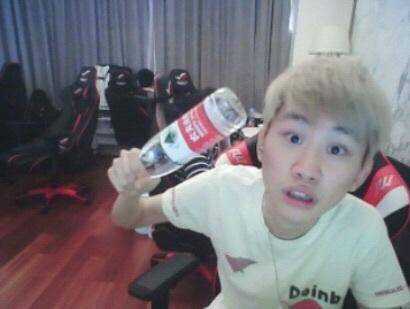
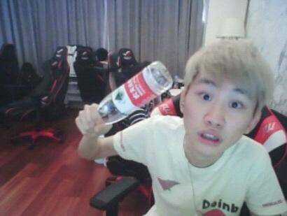
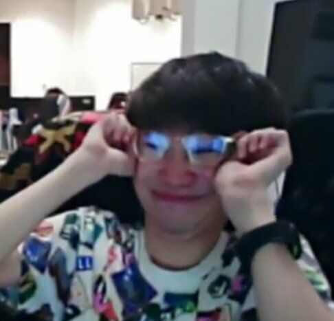
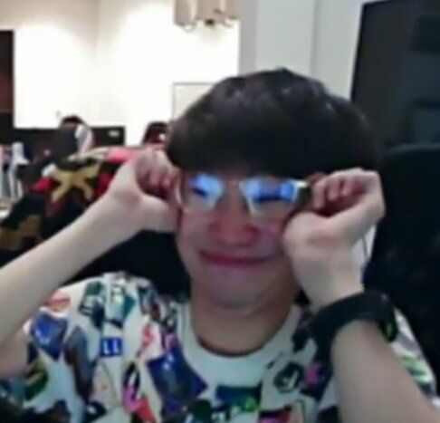

欢迎光临我的博客主页!
基本信息

院系：媒体工程学院
软件工程系
教室：现教506
学号：190808230
姓名：陶昌睿
籍贯：贵州
兴趣爱好：电竞 网球
返回顶部
关于我
出生地：贵州金沙
出生年月：2001年8月4日
本科入学年月：2019年9月
本科就读：浙江传媒学院
专业：软件工程
基本信息
院系：媒体工程学院
软件工程系
教室：现教506
学号：190808230
姓名：陶昌睿
籍贯：贵州
兴趣爱好：电竞 网球
关于我
出生地：贵州金沙
出生年月：2001年8月4日
本科入学年月：2019年9月
本科就读：浙江传媒学院
专业：软件工程
日志
2015年，金泰相以高分路人身份加入QG战队，并在2015年德玛西亚杯重庆站以3:2战胜WE战队夺得季军。
2015年LSPL春季赛QG战队以3:1战胜VGP战队，取得LSPL春季赛冠军，顺利晋级2015年LPL夏季赛。
2015年LPL夏季赛QG战队顺利晋级季后赛，在季后赛以3：2战胜IG战队晋级决赛 [12] ，在决赛上以2:3败于LGD战队，取得亚军。 [4] 2015年12月在IEM科隆站上QG战队以2:3败于Ever战队取得亚军。
2016年LPL春季赛，金泰相在季军赛未上场，QG战队以0:3败于WE战队，取得第四名。
2016年5月17日，金泰相转入NBY战队。
2016年LSPL夏季赛，金泰相带领队友顺利进入季后赛，最终以NBY战队以3:2YM战队，顺利晋级2017年LPL春季赛。
2017年LPL春季赛，QG战队以小组第三进入季后赛，在季后赛首轮以2:3败于IM战队止步八强 [16] ，2017年LPL春季常规赛MVP [6] ；随后在夏季赛所在的QG战队被JDG电子竞技俱乐部收购更名为JDG战队，JDG战队在夏季赛因积分不足止步季前赛。 [17] 随后在全国电子竞技大赛决赛上以0:2败于IG战队，取得亚军 [18] ；12月，金泰相转入RW电子竞技俱乐部，在德玛西亚杯冬季赛上以1:2败于IG战队遭到淘汰。
2018年洲际赛上代表LPL赛区跟LCK赛区比赛中拿下赛点，所属RW战队与RNG、EDG、IG战队共同共同拿下洲际赛冠军 [20-21] ；12月14日，RW电竞俱乐部发布选手金泰相离队声明 [22] 。同日，FPX电子竞技俱乐部宣布，经过与RW电子竞技俱乐部的沟通与协商，金泰相选手转会至FPX电子竞技俱乐部，担任英雄联盟分部中单选手。
2019年3月3日，LPL英雄联盟春季常规赛上FPX以2:1战胜IG拿下8连胜超神战绩 [23] 。4月11日获得2019春季赛常规赛MVP，是继2017春季赛之后再次获此殊荣 [10] ；9月6日，LPL夏季赛决赛上FPX3:1击败RNG获得LPL冠军 [8] ；11月10日，金泰相所在FPX战队3比0横扫G2登顶获得2019年英雄联盟全球总决赛冠军 [9] 。
获奖记录
- 2017年常规赛MVP
- 2012年常规赛MVP第二名
- 去年洲际赛的克烈，今年洲际赛的潘森，S9的泰坦
- 唐小幽的好兄弟，karss的老婆，酥酥，米儿的情人
- LPL唯一%100胜率打野
- S9冠军中单Doinb
照片
 


联系
作者： 陶昌睿网址：Example.com
电话：17366634217
qq:1027971260
©；All Right Reserved.